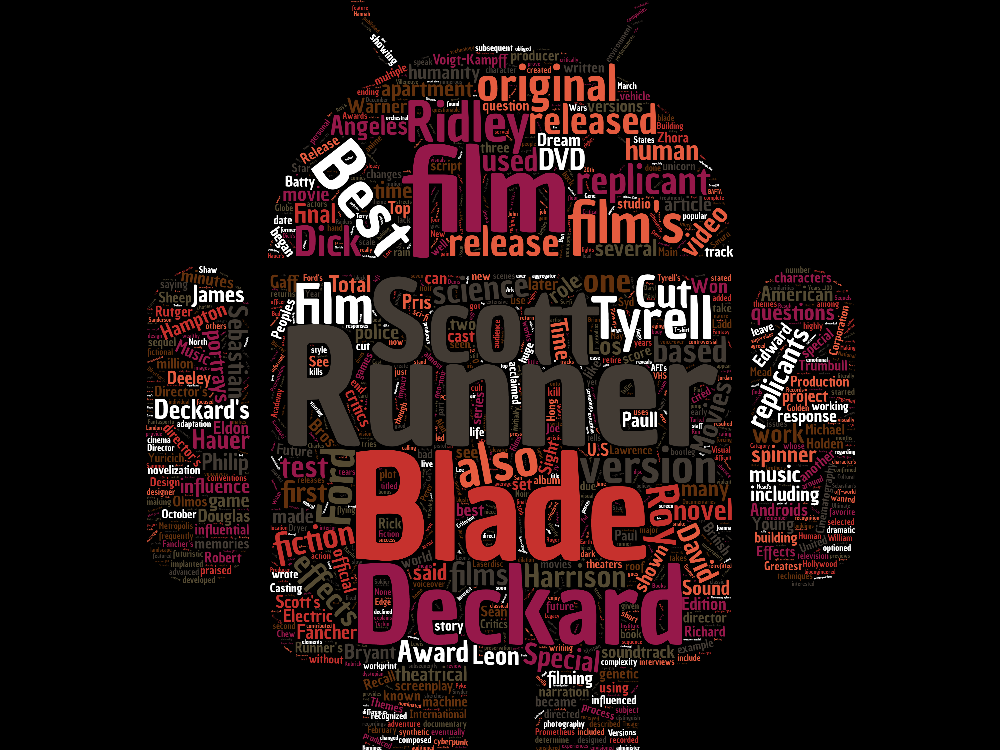

2018 Fall Word Cloud Project
Step 1: Creating the Word Cloud
- Choose 1 topic you are interested in from your textbook.
- Unit 1: a city, country, or tourist activity.
- Unit 2: a movie genre, movie, or actor.
- Unit 6: a kind of food.
- Find the wikipedia page about your topic.
- Go to the website wordclouds.
- Size: choose 3000x2000(3:2)HD
- Word List: at the top click 'Paste/Type text' (you can find this under File as well) and copy and paste the text from your Wikipedia page and click 'Apply.'
- Some of the most common words may not show in your word cloud, so you can lower the number in the word list if you need to.
- Shape: this is very important. Choose one of the shapes they have, or add your own using 'upload.'It is important you upload a transparent image (PNG file). You can find some at this website.
- Gap Size: choose 4 to 6 or whatever you think looks best.
- Direction of words: choose whatever you want.
- Invert: use this if you want.
- Colors / Theme : choose the background and cloud colors you want. Or go with a theme.
- File: when you are finished, save your word cloud as a PNG file. The filename should be your *student number* and *English name* written together. Example: a106999123mark.png
Step 2: Uploading the PNG Image File
- Go to this google forms page and click on the link under your class time. It is important that you choose the correct class time, so please don't click on the wrong class!
- Follow the instructions to upload your word cloud file to my Google Drive account. You will need to sign into your Google Drive account to do this.
Step 3: Presenting the Word Cloud
- During the class you will show your word cloud to the class and give a 60 to 90 second (1 to 1 and a half minute) presentation about it.
- Please tell the class:
- What the topic is
- Why you chose it
- Anything else you want
- Remember, you must talk for at least 1 minute!